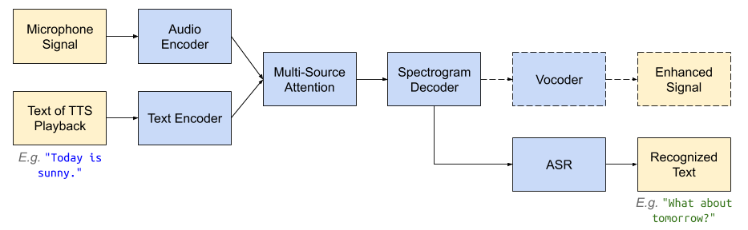
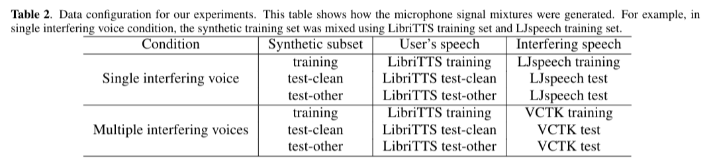

Paper: arXiv
Authors: Shaojin Ding, Ye Jia, Ke Hu, Quan Wang
Abstract: In this paper, we propose Textual Echo Cancellation (TEC) - a framework for cancelling the text-to-speech (TTS) playback echo from overlapped speech recordings. Such a system can largely improve speech recognition performance and user experience for intelligent devices such as smart speakers, as the user can talk to the device while the device is still playing the TTS signal responding to the previous query. We implement this system by using a novel sequence-to-sequence model with multi-source attention that takes both the microphone mixture signal and the source text of the TTS playback as inputs, and predicts the enhanced audio. Experiments show that the textual information of the TTS playback is critical to the enhancement performance. Besides, the text sequence is much smaller in size compared with the raw acoustic signal of the TTS playback, and can be immediately transmitted to the device and the ASR server even before the playback is synthesized. Therefore, our proposed approach effectively reduces Internet communication and latency compared with alternative approaches such as acoustic echo cancellation (AEC).
System architecture:

Data configurations under the two condition:

Meaning of the columns in the table below:
| Microphone signal | TTS playback (only for AEC) | TTS playback source text (only for TEC) | TEC (proposed) | AEC-NLMS | Vanilla-Seq2seq | AEC-Seq2seq | User's speech (ground truth) |
|---|---|---|---|---|---|---|---|
| The Presidential vehicle in use in Dallas, described in chapter 2, | |||||||
| Someone sitting on the box facing the window would have his palm in this position if he placed his hand alongside his right hip. | |||||||
| The state side contained twelve good-sized rooms, | |||||||
| Marina Oswald appeared before the Commission again on June 11, 1964, | |||||||
| The bills were sent as a matter of form to the drawer to have the date added, and the forgery was at once detected. |
| Microphone signal | TTS playback (only for AEC) | TTS playback source text (only for TEC) | TEC (proposed) | AEC-NLMS | Vanilla-Seq2seq | AEC-Seq2seq | User's speech (ground truth) |
|---|---|---|---|---|---|---|---|
| It is a job creation scheme. | |||||||
| The Government yesterday announced its proposed new pension account. | |||||||
| The first thing is to assess the damage that has been done. | |||||||
| I am the head. | |||||||
| A new school will be built. |